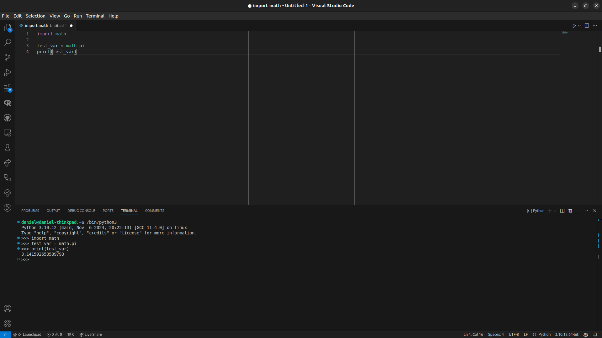
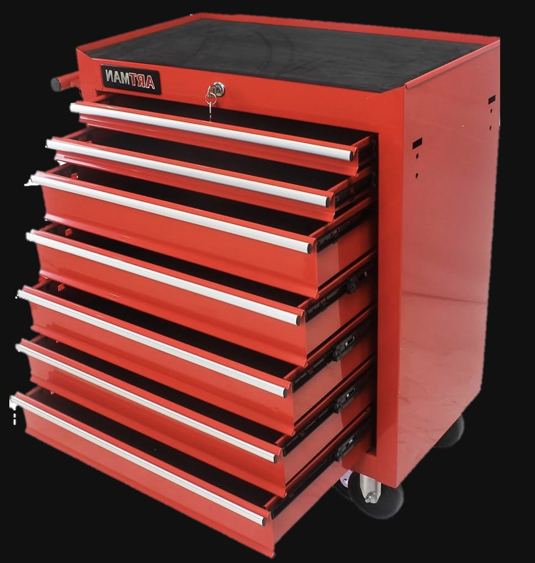
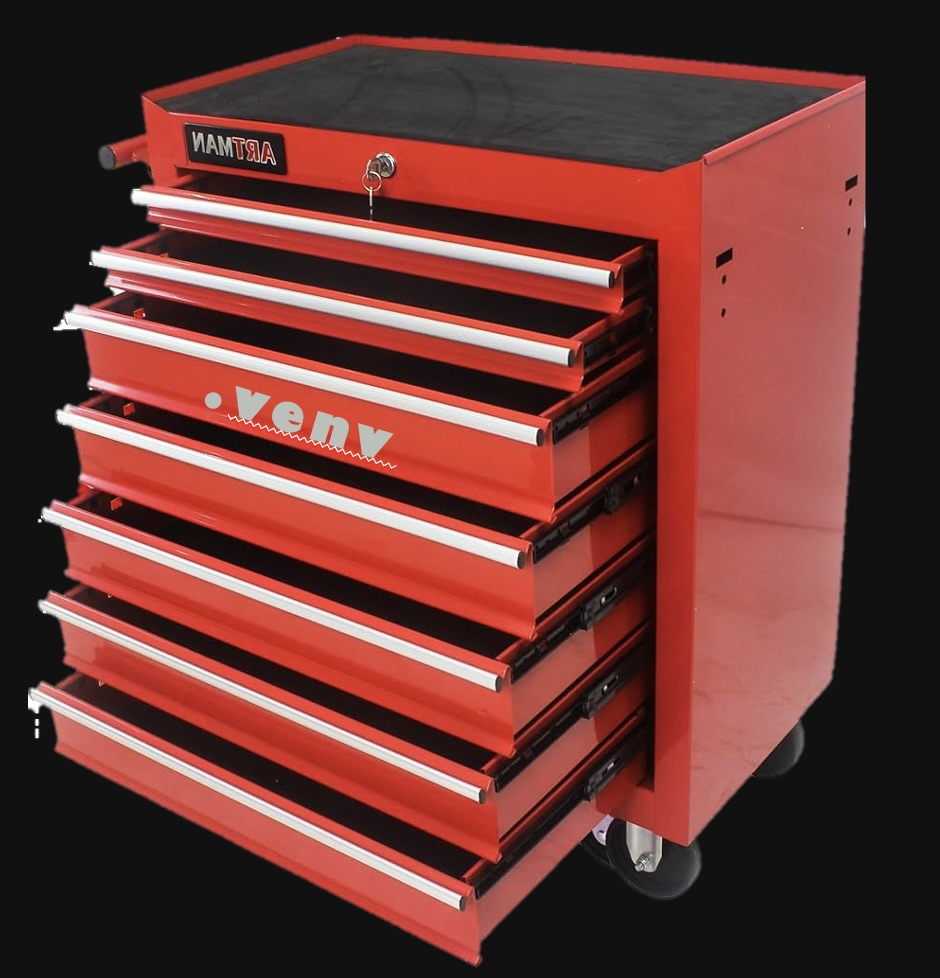
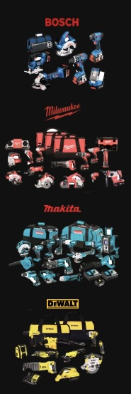
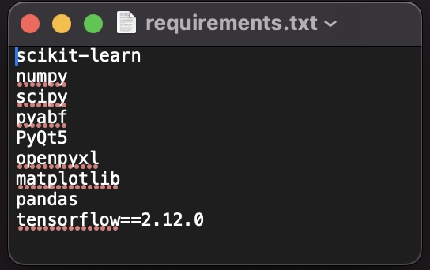
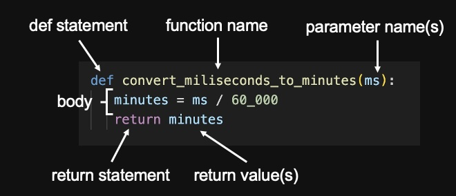

flowchart LR
A[package] --> B(module) --> C((function))
style A fill:#DEC62F,stroke:#000000,color:#000000
style B fill:#DE2F99,stroke:#000000,color:#000000
Introduction to Python
Verjinia Metodieva and Daniel Parthier
2025-01-21
Why would you code?
Motivation
- Saving time
- Reproducible workflow
- Flexibility
- Unlimited creativity
Goal of today
# This script exports metadata information to a JSON file.
# The metadata includes the author, date, and the average resting
# membrane potential, units and the sweep count.
# The output is saved to 'data/data_info.json'.
import json
import numpy as np
path = 'data/'
resting_membrane = [-70.1, -73.3, -69.8, -68.5, -71.2]
resting_membrane_avg = np.mean(resting_membrane)
sweeps = [1, 2, 3, 4, 5]
voltage_unit = 'mV'
sweep_count = len(resting_membrane)
output_file = path + 'data_info.json'
output_data = {
'author': 'Doe, John',
'date': '2025-01-10',
'resting_membrane_avg': resting_membrane_avg,
'unit': voltage_unit,
'sweep_count': sweep_count
}
with open(output_file, 'w') as f:
json.dump(output_data, f)Basic usage
- Can be run from the terminal/console as well
- Start python by typing
python/python3into the console - You can quit by typing
quit()into the console
- Start python by typing
- Most of the time with a GUI (graphical user interface)
- Sometimes code is run in document style (Jupyter Notebook)
- Run scripts
Visual Studio Code
- 1 of multiple options (PyCharm, Spyder)
- VS Code offers multifunctionality and integration of useful extensions (Git, Remote Explorer, Jupyter, GitHub Copilot)

Visual Studio Code (Features)
- Multi-language support (Python, R, Matlab, Julia, C++, etc.)
- Set up your project (make environment, create files and folders)
- Provide visual notation (code highlighting)
- Auto-complete code snippets
- Show documentation of functions
- Find and fix errors in code (debugging)
- Synchronise code with GitHub
- And much more…
Environments

- Only bring the tools you need
- Less bloated
- Fewer conflicts
- Only project-specific packages
Make environment
- Setting up an empty environment (get a drawer)

- Can be done via terminal
- Make one in VS Code
CTRL + SHIFT + P→ type: env- Select: Create Environment
Start environment
Windows
Unix/macOS
- VS Code will start the environment for you
Quit environment
Install packages

Package managers
- What are they?
- pip (recommended)
conda-forge (if you really have to)
Usage

# installing packages from
requirements.txt file
# uninstalling a package
# package with specified version
Import
When do you have to import?
- Only some functions are available by default
- Other functions are available through external packages
- A package can have smaller ‘packages’ inside called modules
Import packages
Let’s open the ‘numpy’ drawer!
This will open our nummpy toolbox drawer
- Pull out a tool to use it with the dot notation: toolbox.tool
Import (abbreviated)
- Some packages can have long names or you want an abbreviation (ie.
numpytonp) - Assign a new name during the import (
as)
Import single functions
Load only parts of the package
- This could mean single functions or multiple functions/objects
- Avoid clutter and only import what you need
- Now everything after
importis available
Word of advice
- Some packages use the same function names
- Avoid conflicts: reference package or use alias
Import modules
- Also a module as part of a package can be loaded using
.or withfrom
Programming building blocks

Photo by JAQUES London
Variables
- Variables are objects we want to keep
- We assign them and can use them in the future
- Now
cell_countwill be1until changed or deleted - We can assign anything we want
Operators

Kind of like functions1 but different
- Have elements on both sides:
a operator b
Basic operators
+add two elements together-subtract*multiply**power/division,//integer1 division%modulus
Comparison operators
Let’s compare things!
- Comparison operators will tell you if something is:
TrueorFalse1
==equal!=not equal<smaller and>larger<=smaller or equal and>=larger or equal
Logical operators
Logical operators check for conditions and returns True or False
andchecks if both side areTrue
orchecks if at least one of the sides isTrue
(data-) types
There are many…
- But you only need to know a few
- They can do very different things and might have different properties
Strings
- Strings are simply text
- Very important for loading files
- Directory is a string
- Typically made with
'or"as in'text'or"text"
What to do with strings
Split string into multiple strings:
You are curious about other things?
- Type the name of your string into the python console with a
.and presstabtwiceoutput_file.
Other things to do with strings
- They have a length
- Number of characters including spaces etc.
- You can access parts of a string (indexing)
What did you expect?
- In python we start counting positions from
0- 0:
'f', 1:'o', 2:'u', 3:'r'
- 0:
'r'How to break things1 101
Be careful how you write text or name folders
File "<stdin>", line 1
folder = 'path/sub_path''
^
SyntaxError: unterminated string literal (detected at line 1)- Avoid escape characters
- Some functions cannot handle special characters

There are numbers and there are numbers
None
- A variable which exists but has no content can be
None
- Your program then knows that
var_aexists - You can change it later to another value
Tuple
You can combine single elements into one
- Can be different types (
strings,ìnt,float, or other objects) - Chain elements and combine them with
(and) - Tuples cannot be changed after creation (‘immutable’)
- Single elements can be accessed by their location
- Indexing start in python at 01
Tuples cannot be changed
- You cannot modify elements inside the tuple or add any after creation
Lists

- Multiple items in a list
- Similar to
tuplebut more powerful - Lists can be changed after creation (‘mutable’)
Let’s list things!
Make lists
- Lists are made by using
[and] - Elements are inside
- Access elements inside a list1
Features of lists
- Lists can do special things
Slicing
Sometimes you want to access multiple elements in a chain
- You can use
:to access a slice between to indices
- Specify ‘slice’ properties
slice(start, stop, step)
- Alternative using
:stop:steporstart::step
Dictionary
You want to to have different things in different things and maybe add some things?
Hello dictionary!
- Very flexible
- Still very structured
- Easily accessible
Make dictionary
- Made using
{and} - Contains key and values
Properties of dictionary
- List all the keys
- Get all values
- Get all values from specific key
- In case you need an output even if key does not exist use
.get
Simple functions
# combine variable types
var_a = 'a variable'
value_a = 42
print('more interesting when we include \n', var_a, 'with value', value_a)
print('the varaible type of var_a is', type(var_a))
print('the varaible type of value_a is', type(value_a))more interesting when we include
a variable with value 42
the varaible type of var_a is <class 'str'>
the varaible type of value_a is <class 'int'>Methods
# sort a list with a method
animal_list = ['SNA 0254581', 'DSC 035576', 'SNA 0954581','SNA 0856662','DSC 024504']
sorted_animal_list = sorted(animal_list)
# same thing but using a method
animal_list.sort() # sorting in ascending order
print(animal_list)
animal_list.sort(reverse = True) # sorting in descending order
print(animal_list)
num_animals = len(animal_list)
print("I've analyzed the date of", num_animals, "animals.")['DSC 024504', 'DSC 035576', 'SNA 0254581', 'SNA 0856662', 'SNA 0954581']
['SNA 0954581', 'SNA 0856662', 'SNA 0254581', 'DSC 035576', 'DSC 024504']
I've analyzed the date of 5 animals.Define your own functinos

import json
import numpy as np
path = 'data/'
resting_membrane = [-70.1, -73.3, -69.8, -68.5, -71.2]
resting_membrane_avg = np.mean(resting_membrane)
sweeps = [1, 2, 3, 4, 5]
voltage_unit = 'mV'
sweep_count = len(resting_membrane)
output_file = path + 'data_info.json'
output_data = {
'author': 'Doe, John',
'date': '2025-01-10',
'resting_membrane_avg': resting_membrane_avg,
'unit': voltage_unit,
'sweep_count': sweep_count
}
with open(output_file, 'w') as f:
json.dump(output_data, f)import json
import numpy as np
def create_meta_data_json(patcher, date_of_rec, RMPs, save_path, save_filename):
avg_RMP = np.mean(RMPs)
num_sweeps = len(RMPs)
output_data = {
'author': patcher,
'date': date_of_rec,
'resting_membrane_avg': avg_RMP,
'unit': 'mV',
'sweep_count': num_sweeps
}
print('saving the file ', save_filename, 'in', save_path)
with open(save_path + save_filename, 'w') as f:
json.dump(output_data, f)
return output_datapatcher = 'Verji'
date_of_rec = '2025-01-15'
save_path = 'data/'
save_fn = 'verji_s_first_recording.json'
resting_membrane = [-70.1, -73.3, -69.8, -68.5, -71.2]
# ways to call the function
create_meta_data_json(patcher = 'Verji', date_of_rec = date_of_rec , RMPs = resting_membrane, \
save_path = save_path, save_filename = save_fn)
out_data = create_meta_data_json(patcher, date_of_rec, resting_membrane, save_path, save_fn)
out_data = create_meta_data_json('Verji', '2025-01-15', [-70.1, -73.3, -69.8, -68.5, -71.2], 'data/', \
'verji_s_first_recording.json')Documentation
# comments describe the code
- audience - you or other developers
- functionality
- ‘why?’
’‘’docstrings give explanations’’’
- how to use?
- for single functions, modules, scripts
- accessed through help()
README.md
- project documentation
Documentation example
import json
import numpy as np
def create_meta_data_json(patcher, date_of_rec, RMPs, save_path, save_filename):
'''
Returns and saves a dictionary with metadata.
Args: patcher (str): name of experimenter
date_of_rec (str): date of experiment
RMPs (list): list of recorded resting membrane potentials
save_path (str): destination folder
save_filename (str): name of the file
Returns: output_data (dictionary): containing the metadata
'''
avg_RMP = np.mean(RMPs)
num_sweeps = len(RMPs) # have as many sweeps as values
# define metadata dictionary
output_data = {
'author': patcher,
'date': date_of_rec,
'resting_membrane_avg': avg_RMP,
'unit': 'mV', # always mV for RMP
'sweep_count': num_sweeps
}
# confirmation to user
print('saving the file ', save_filename, 'in', save_path)
with open(save_path + save_filename, 'w') as f:
json.dump(output_data, f)
return output_data
resting_membrane = [-70.1, -73.3, -69.8, -68.5, -71.2]
# create a out_dict containing the metadata
out_dict = create_meta_data_json('Verji', '2025-01-15', resting_membrane, 'data/', 'verji_s_first_recording.json')